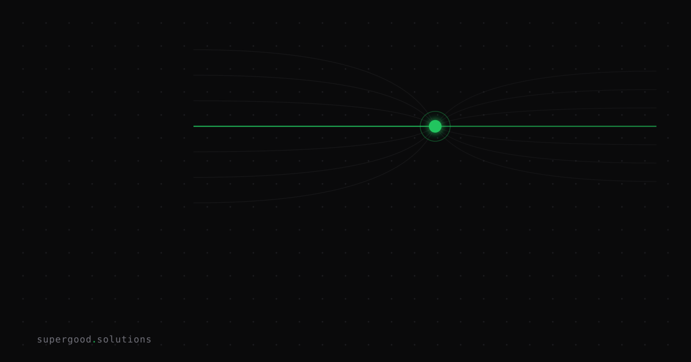

The Neutral AI Middleware You Relied On Just Got Acquired
TL;DR: Stripe's $7B+ acquisition of OpenRouter proves that the "vendor-neutral routing layer" enterprises adopted to escape model lock-in is itself a hot M&A target. If your escape hatch can be bought, it was never neutral — it was just pre-acquisition.
Key Insight
For the last two years, the standard advice for avoiding AI vendor lock-in was: don't call OpenAI or Anthropic directly, put a router or gateway in between. Tools like OpenRouter let teams swap models with a config change instead of a rewrite, and that flexibility got sold as architectural insurance against any single model provider's pricing, availability, or capability shifts.
Then Stripe agreed to acquire OpenRouter for more than $7 billion — over 5x the $1.3 billion valuation it had just three months earlier off a $113 million Series B. That timeline alone is the story: a company can go from "neutral infrastructure everyone depends on" to "acquisition target with a strategic buyer's own incentives" in under three months. The neutral glue layer isn't a stable category. It's a valuable choke point, and choke points get bought.
Why Teams Miss This
The mistake isn't using a router — it's treating "abstraction layer" and "neutral party" as the same thing. Teams that adopted OpenRouter (or similar gateways) to de-risk model dependency implicitly assumed the router itself was a stable, disinterested utility, like DNS or a load balancer. But a company that sits between every one of your AI calls and every model provider has enormous strategic value precisely because of that position — it sees your usage patterns, your spend, your latency requirements, and it controls your routing logic. That's not a neutral utility. That's the most valuable node in the graph.
Once a payments company with billions in cash and clear interest in "AI meets money movement" comes calling, that node stops being neutral by definition. It now has an owner with a roadmap, a sales team pushing bundled products, and its own reasons to nudge you toward paid routing tiers, into billing integrations, or away from the exact optionality you signed up for.
How to Actually Do It
Dependency risk in an AI stack lives in three layers, and most teams have only audited the top one:
- Model layer — which foundation model(s) you call. Everyone thinks about this one.
- Routing/gateway layer — the middleware that decides which model handles a request, does fallback, and often owns your API keys and usage telemetry. This is the layer that just got acquired.
- Data/eval layer — your prompts, evals, and fine-tuning data, which should be portable regardless of what happens above.
Concrete steps to reduce exposure at the routing layer specifically:
- Treat your router config as an interface, not a dependency. Keep model selection logic in your own code or a thin internal wrapper, and use third-party routers as a pluggable backend behind that wrapper — not the source of truth.
- Self-host or open-source the routing logic where it matters. Projects like LiteLLM can run inside your own infrastructure, so an acquisition changes a vendor relationship, not your uptime or your data exposure.
- Multi-source your routing, the same way you multi-source your models. If OpenRouter (or any single gateway) sees 100% of your traffic, you've just relocated your lock-in one layer down, not removed it.
- Read the acquirer's incentives before you read the migration guide. A payments company buying a model router is optimizing for transaction data and billing integration, not for keeping your routing free of business logic. Assume new pricing models, new default integrations, and new "recommended" partners will show up on their roadmap — because they will.
# quick audit: how concentrated is your model traffic through one gateway?
grep -rl "openrouter\|litellm\|portkey" ./src | wc -lWhat We've Learned
Run the audit above this week. If a single third-party routing layer touches more than half your production model calls, that's your actual concentration risk — not which foundation model you're using. Our next experiment: wrapping our own router calls behind an internal interface so a future acquisition anywhere in the stack is a config change, not an incident.
Sources
- Stripe agrees to acquire OpenRouter to help businesses optimize token spend and unlock new model access — Stripe Newsroom, official announcement
- Stripe to buy OpenRouter as fintech expands deeper into AI — CNBC
- Stripe acquires OpenRouter for over $7 billion, more than 5X its valuation three months ago — TechStartups
- Stripe Acquires OpenRouter for $7B+, Turning Model Routing Into a Payments Play — Yahoo Finance
Have a specific workflow in mind?
Bring it to a Quick Scan — a live working session where we'll tell you honestly whether it should be an agent, a workflow, or left alone, before you spend a dollar building it. You get 3 prioritized recommendations on the call, a one-page summary after, and the $500 credited toward any engagement within 30 days.
Get new posts + practical agent-ops notes
One email when something new goes up. No nurture sequence, no spam — unsubscribe whenever you want.